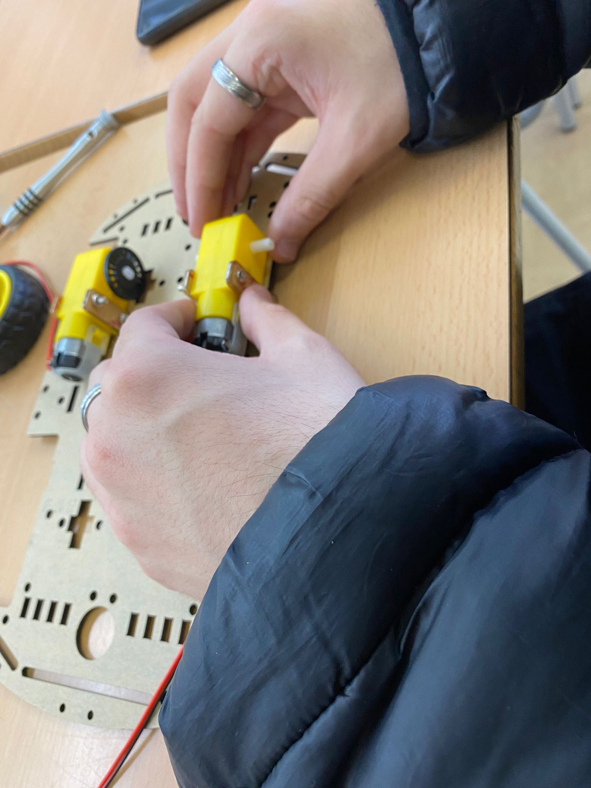

PROCEDIMIENTO SÍNTESIS


Lo que se ha hecho en la primera parte ha sido, poner los 4 motores de las ruedas de forma en la que quede en los bordes de la estructura y seguidamete enlazarlos y atornillarlos con las 4 ruedas del coche, dos ruedas en la parte de delante y dos ruedas en la parte de atrás y los 4 discos para que se pueda sujetar las ruedas. Luego de poner las 4 ruedas con los 4 motores ponemos la placa del coche en la parte de arriba y en los dos agujeros grandes que hay en los extremos, en uno ponemos 4 cables, que en este caso 2 son rojos y dos negros y en el agujero del otro extremo hacemos lo mismo
Seguidamente a lo que procedemos a hacer es a poner las cuatro vias al modulo de seguimiento de 4 vías, ponemos dos a los bordes y dos luces de seguimiento en el medio, y encima del robot ponemos las dos luces del módulo de detección infrarrojos azules. Luego seguiamos conectando los cables del L298N driver board con el pack de 50 cables tipo macho que nos venían junto al Coche. Luego aprovechamos para conectar también lo que será la cabeza del robot al Tablero de control ATMEGA328P.
Bueno, ahora es hora de montar el servo. En este momento con ya todo montado de momento, haremos el Servo, para poner y conectar el Servo, necesitamos los Poste de cobre de doble paso, 1 soporte Servo, y 1 soporte ultrasónico y de esta forma debemos conectar el Servo y el sensor de ultrasonido del Servo...